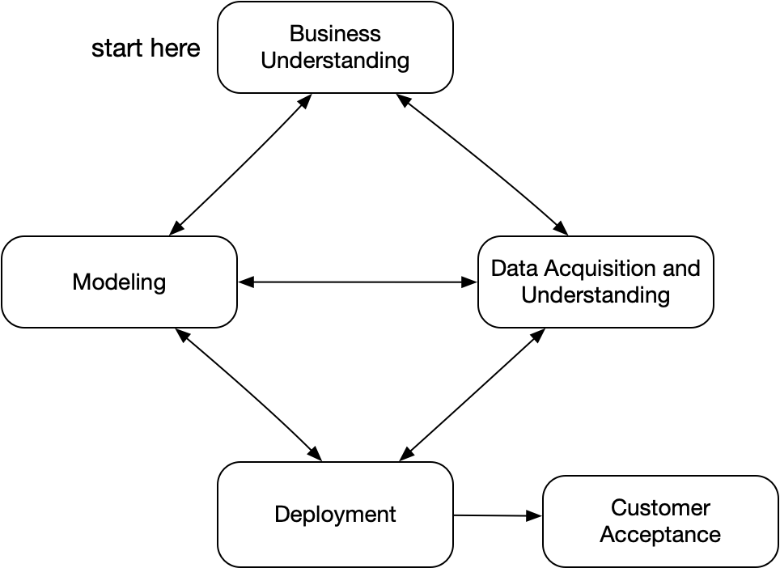
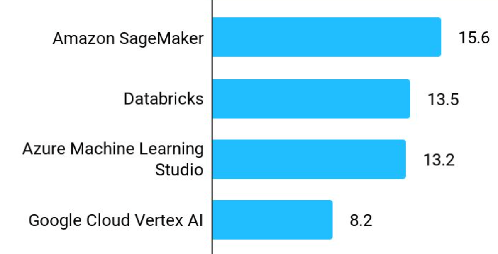

### Practical Data Science with Python # 1. Introduction
## Why is data science big today? - Lots of data, mainly in the cloud - Lots of great tools - Lots of high-stakes decisions to make
## Why Python? - Great libraries (pandas, numpy, scikit-learn, etc) - Flexible, powerful language - Everyone uses python *** Other options: R, SAS, Julia, Matlab
## Project Steps - Understand the question - Find and clean the data - Explore the data - Make a model and fit it to data - Tune hyperparameters - Answer question (including confidence measure!) - Make into something anyone can see anytime
## TDSP "Team Data Science Process" from Microsoft replaces CRISP-DM: 
## Models From Kaggle 2021 Data Science Survey: 
## Frameworks From Kaggle 2021 Data Science Survey: 
## Products? From Kaggle 2021 Data Science Survey: 
## Databricks? - From creators of open-source Apache Spark in 2013 - 3000 employees - Valued at $38B (Oct 2021) - Founder (Ali Ghodsi) worth $1.8B
## Graphical Interface - Simple: Excel - Expensive: Tableau, SAS, Alteryx *** "Business Intelligence"
## Tableau? - Founded in 2003 by Stanford CS researchers - Sold to Salesforce in 2019 for $15.7B 
## Skills you need - Statistics (emphasizing prediction models) - Software development - Math (emphasizing optimization) - Business understanding and communication - Design of data visualizations *** This course will **not** make you a data science expert. This course **will** make you employable in data science.
## Specializations - Machine learning - Deep learning - Natural language processing - Robotics - Data engineering and big data - Apache Spark - Hadoop - Business intelligence and analytics - Tableau - Statistical methods
# Questions? Video: What REALLY is Data Science? [https://youtu.be/xC-c7E5PK0Y](https://youtu.be/xC-c7E5PK0Y)